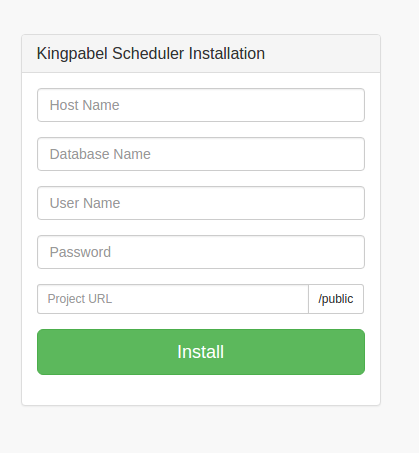
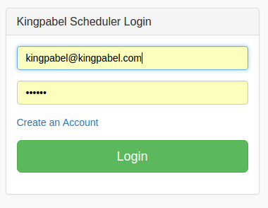
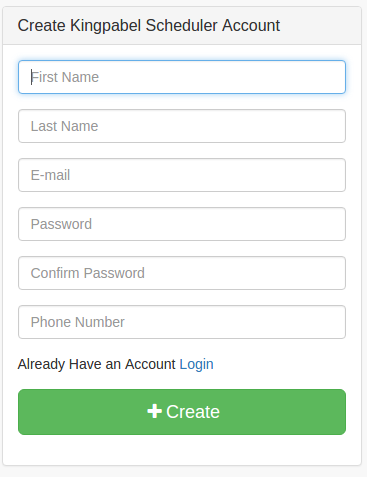
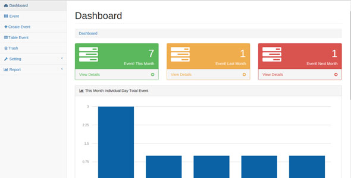
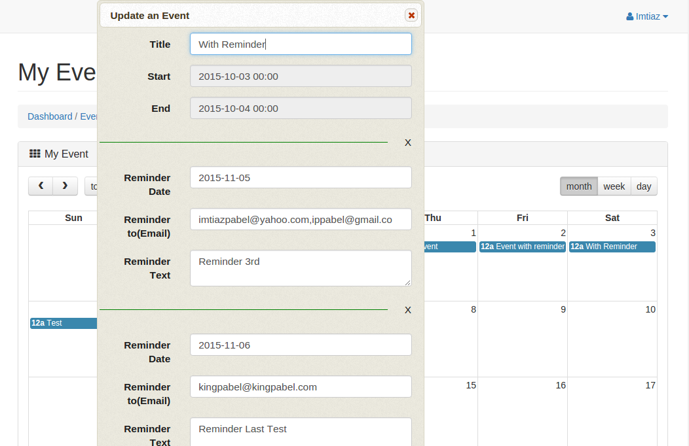
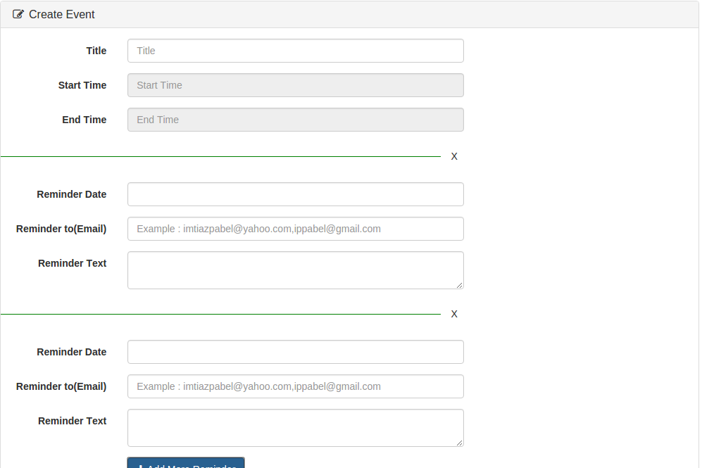
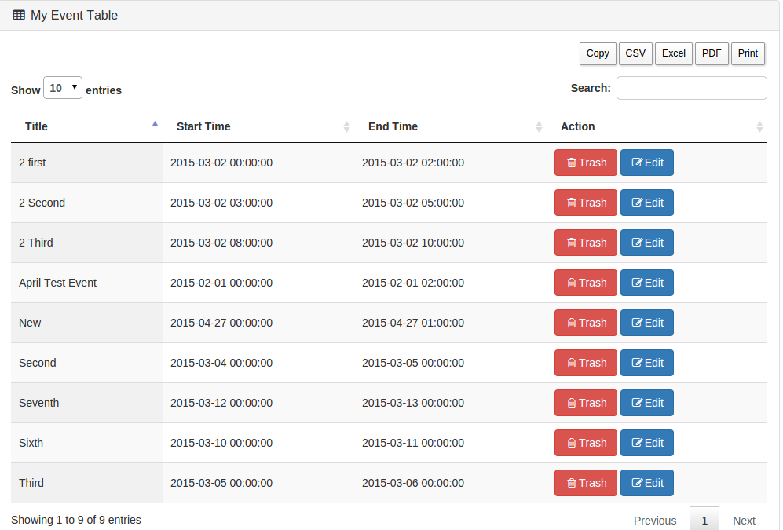

At first collect the sql file,which is already provided.Then import it in your hosting phpmyadmin.Then just hit the projct on your browser and you will get installtion form to install easily.

Give your information and click install.Installation is done.
If you want to change again after installation once,just go to .env file on your project root,and give your information that's it.
If you wanna change your project url again,then just go project root/index.php and then change project url.
If you already created an account and you have the credential,then just login using credential.

If you are not created account yet,just click on "create an accoun" from landing page and then create an account using information,then log in.

After login you found dashboard.In dashboard you will found current month total event,last and next month total event which you already created.
Also found a graphp for current month event in every single day
Also found this year total event in a single month in a chart view.

After clicking event you will found a calender in calender you see your existing event which you already created with very nice day,month and week view.
You will got your daily event in your email.To enable this please execute this in your hosting corn jobs
0 0 * * * wget -O /dev/null http://yourprojecturl.com/public/account/mail-me
You can create a new event by clicking a day in that calender.You can also set multiple reminder for every event.Then most interesting feature is reminder,in reminder you can set date,email,text.After set the reminder the script will send an automatically email(inputed email) in that date(inputed date) using that text(inputed text).For automatically get reminder email please set the below in your hosting corn jobs
0 0 * * * wget -O /dev/null http://yourprojecturl.com/public/account/mail-reminder
You can update an existing event with or without reminder by clicking an existing event in calender.

In create event menu you can create event with your event title and start time and end time information if you wanna set a reminder just click on add reminder you can add multiple reminder also.You can also create and event in calender.

In table event you found your existing event which you already created,you can also update them and move to trash them.

In trash menu you found that event which already moved to trash.You can delete them or restore them.
Two menu in settings
Update Info
you can update your information
Change Password
You can change your existing password
Table Report
Using a start time and end time you can see a report in table view
Calender Report
Using a start time and end time you can see a report in calender view
For update V1 to V2 just execute below code in your database sql.That's enough
-- phpMyAdmin SQL Dump
-- version 4.0.10deb1
-- http://www.phpmyadmin.net
--
-- Host: localhost
-- Generation Time: Nov 02, 2015 at 12:22 AM
-- Server version: 5.5.46-0ubuntu0.14.04.2
-- PHP Version: 5.5.9-1ubuntu4.14
SET SQL_MODE = "NO_AUTO_VALUE_ON_ZERO";
SET time_zone = "+00:00";
--
-- Database: `scheduler`
--
-- --------------------------------------------------------
--
-- Table structure for table `schedule_reminder`
--
CREATE TABLE IF NOT EXISTS `schedule_reminder` (
`id` int(10) unsigned NOT NULL AUTO_INCREMENT,
`schedule_id` int(10) unsigned NOT NULL,
`reminder_date` timestamp NOT NULL DEFAULT '0000-00-00 00:00:00',
`reminder_email` text COLLATE utf8_unicode_ci NOT NULL,
`reminder_text` longtext COLLATE utf8_unicode_ci NOT NULL,
`created_by` int(11) NOT NULL,
`updated_by` int(11) NOT NULL,
`created_at` timestamp NOT NULL DEFAULT '0000-00-00 00:00:00',
`updated_at` timestamp NOT NULL DEFAULT '0000-00-00 00:00:00',
`deleted_at` timestamp NULL DEFAULT NULL,
PRIMARY KEY (`id`),
KEY `schedule_reminder_schedule_id_foreign` (`schedule_id`)
) ENGINE=InnoDB DEFAULT CHARSET=utf8 COLLATE=utf8_unicode_ci AUTO_INCREMENT=78 ;
--
-- Constraints for dumped tables
--
--
-- Constraints for table `schedule_reminder`
--
ALTER TABLE `schedule_reminder`
ADD CONSTRAINT `schedule_reminder_schedule_id_foreign` FOREIGN KEY (`schedule_id`) REFERENCES `schedule` (`id`);